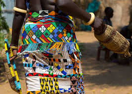

This is a simple necklace Made out of traditional beads,its beautiful but is more beautiful when u try it on, as an African u need to be your own identity by symbolizing African attires ,don't be sway a wa by this western mode of dressing. See this beautiful African wear.
This is anyuak tribe wear from Ethiopia leaving in Gambella county close to South sudan boarder,they River Lake nailotes from Baragazal in South sudan during the phase of migration